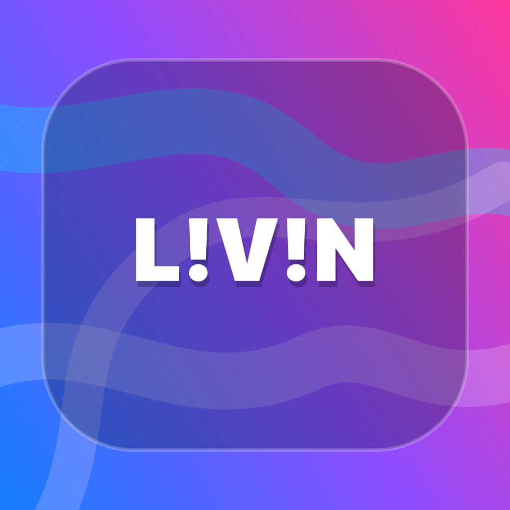

Sunset Volleyball
Santa Monica Beach · 6:00 PM · Free

Events. Live snaps. Real places.
A social map built around going outside: discover nearby events, post snaps from where you actually are, and save the places you want to remember.
Santa Monica Beach · 6:00 PM · Free
Griffith Park · 7:15 PM · Free
Saturday · 22 going
Live snaps become floating posts on the map. Guide spots become saved circles for future trips.
Profiles, follows, private/public mode, event groups, and realtime chat are the first multiplayer loop.
SwiftUI, MapKit first, Supabase backend, APNs notifications, Stripe ticketing later.